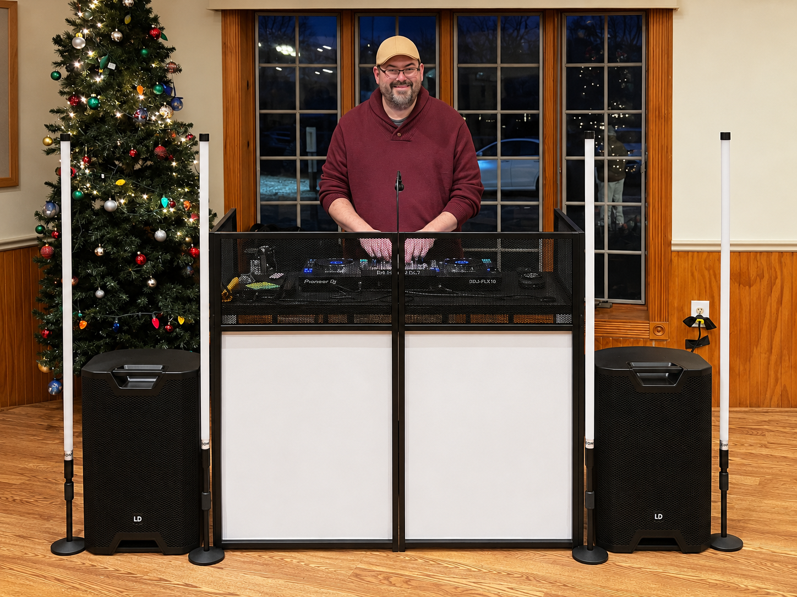
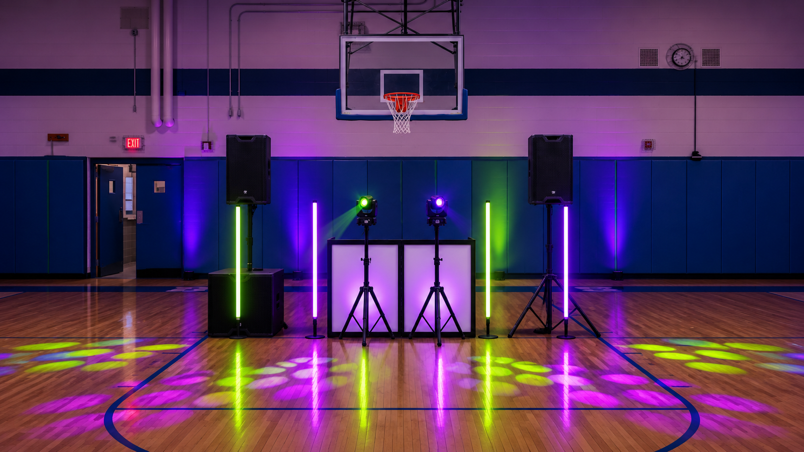
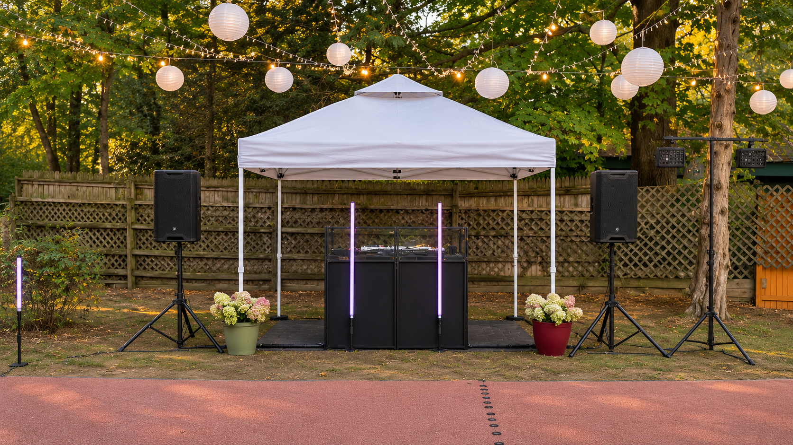
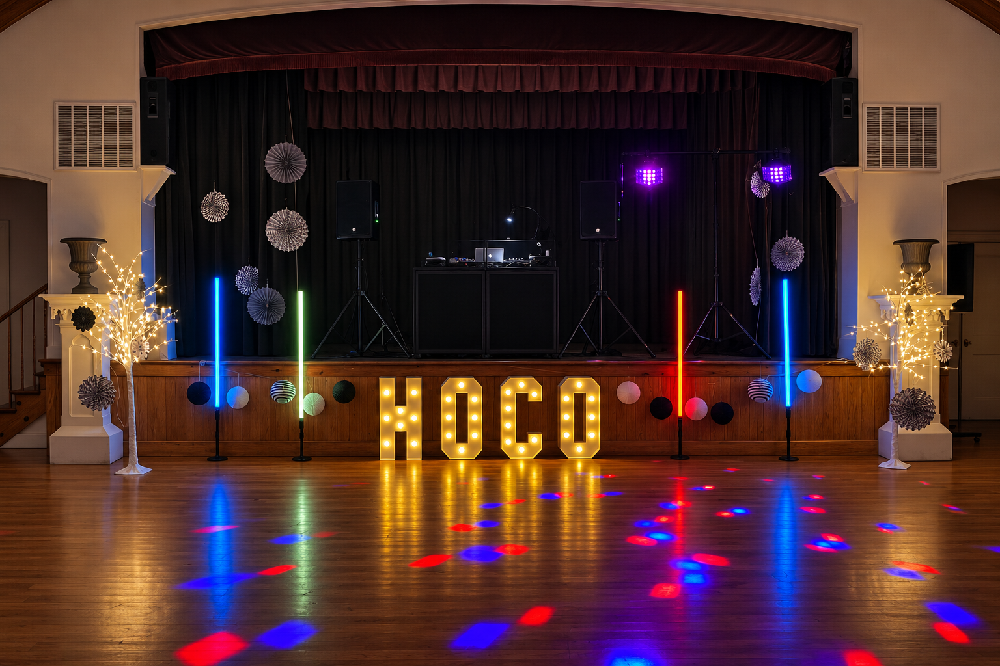
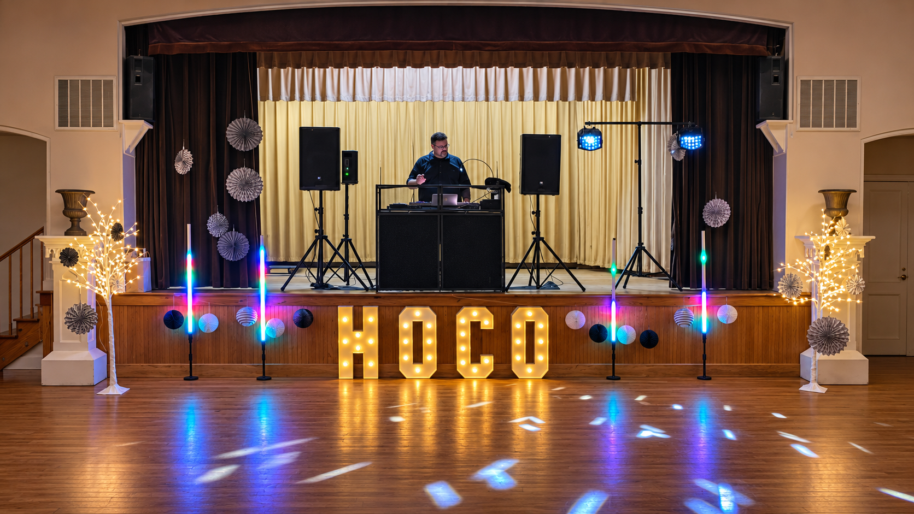

GOOD PEOPLE. GREAT MUSIC. YOUR NIGHT.
Some nights
just stay
with you.
Let’s make yours one of them. Thoughtful planning, a personal soundtrack, and a DJ who knows when to turn it up.
Professional, fully insured DJ & MC services · Since 1993
WEDDINGS / SCHOOL DANCES / PRIVATE / CORPORATE

Bringing people together
through music since 1993.
WHAT ARE WE CELEBRATING?
Your occasion.
Your kind of celebration.
Start with your event. We’ll find the right fit, explore your options, and check your date together.
Weddings
From the vows to the very last dance. Your story, with a soundtrack to match.
Explore weddings ↗02 / THEIR NIGHTSchool dances
& proms
Big energy, clean music, and requests that let students be part of the night.
Explore school events ↗03 / JUST BECAUSEPrivate parties
Birthdays, milestones, and your favorite people. Let’s give them something to dance about.
Plan your party ↗04 / BEYOND THE OFFICECorporate events
Professional DJ and MC services, with presentation sound and A/V options when you need them.
Explore corporate ↗YOUR DAY. BEAUTIFULLY SET.
Ready for the first dance.
And everything after.
A clean white booth, a warm atmosphere, and a soundtrack that brings your people together.

FROM GYM FLOOR TO DANCE FLOOR
A familiar room.
A whole new energy.
School dances and proms with music students love, thoughtful planning, and a personal touch from behind the booth.

FRESH AIR. FAVORITE PEOPLE.
Take the celebration
outside.
From backyard milestones to outdoor gatherings, let’s bring your soundtrack to the setting you love.

MAKE IT A NIGHT TO REMEMBER
Homecoming.
Turned up.
A stage set for celebration—from the first arrival to the final track.



EXPERIENCE BEHIND THE BOOTH
Read the room.
Find the moment.
Make it count.
I’ve been bringing people together through music since 1993. Every crowd is different—and that’s exactly what I love about this work.
We’ll plan the important moments together. Then I’ll bring the experience, the music, and the flexibility to keep your celebration feeling natural.
A LITTLE LESS BACK-AND-FORTH. A LOT MORE YOU.
Your celebration.
All in one place.
We’ll bring the details together—from your timeline and music preferences to your agreement. DJ Jesse B will guide you through each step and confirm the planning tools for your event.
- 01
Find your fit
Choose your event, explore services, and request your date.
- 02
Make it official
Once DJ Jesse B confirms availability, review your agreement and deposit details.
- 03
Make it yours
Work with DJ Jesse B on your event details, timeline, and music preferences.
YOUR NEXT GREAT NIGHT STARTS HERE
Tell me what you’re imagining.
Share a few details and DJ Jesse B will personally follow up about availability and services. Sending an inquiry does not reserve your date.
THE NEXT GREAT NIGHT STARTS HERE
Let’s make some memories.
Already planning with DJ Jesse B? Client sign in →
KIND WORDS. REAL CELEBRATIONS.
The music ends.
The memories stay.
A few words from the couples, schools, and organizations who have celebrated with DJ Jesse B.
“We can’t say enough about how incredible DJ Jesse B was at our wedding! From the very first song to the final dance, he had the perfect read on the room — effortlessly blending genres and decades to keep every guest, young and old, entertained and on their feet.”
“Thank you so very, very much for being our Entertainment Sponsor for the 2026 Strength in Strides Run/Walk. It’s people like you who support non-profits that make our world a better place!”
“Thank you so much for donating your time, equipment and expertise to our Valentine’s Day Dance! The students really enjoyed the event… We couldn’t have done this without your help.”